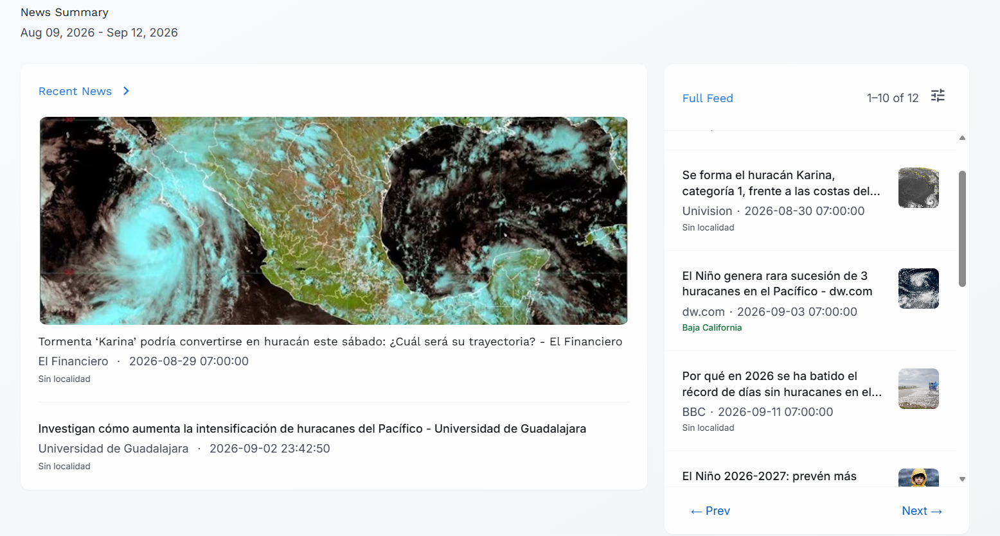
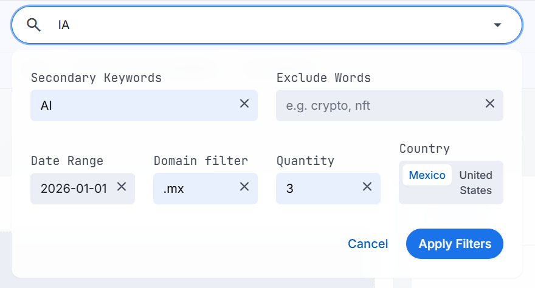
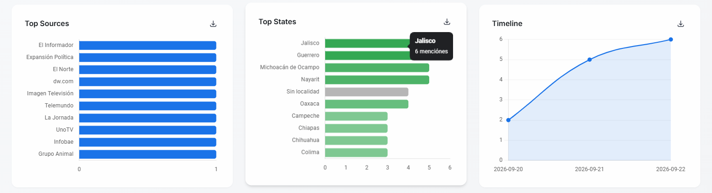
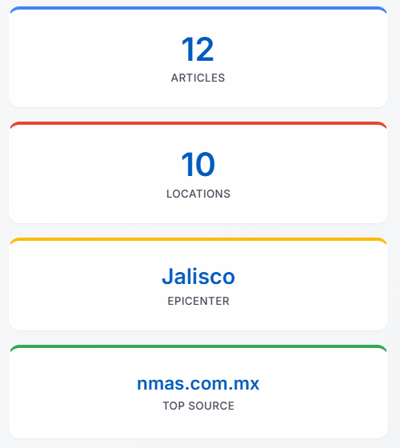
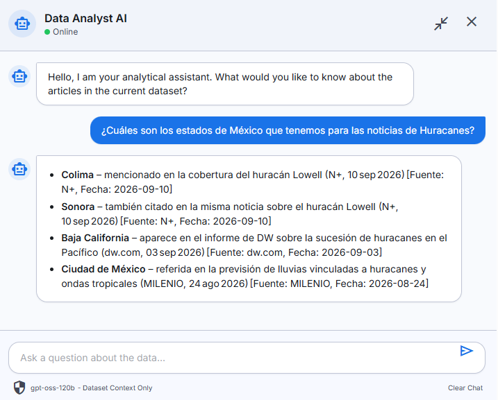
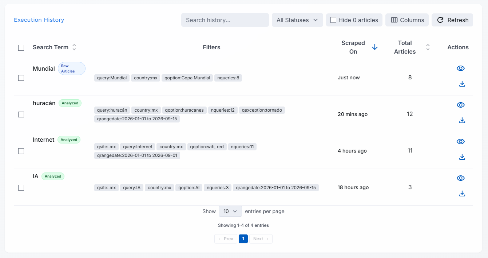
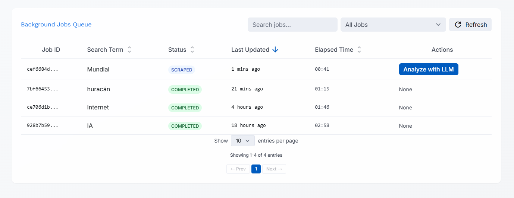
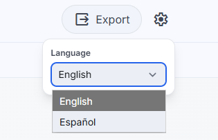

News Summary
No dates available
Recent News chevron_right
Full Feed
Date
Source
State
Top Sources
Top States
Timeline
Execution History
|
Search Term unfold_more
|
Filters |
Scraped On arrow_downward
|
Total Articles unfold_more
|
Actions |
|---|
Background Jobs Queue
| Job ID |
Search Term unfold_more
|
Status unfold_more
|
Last Updated arrow_downward
|
Elapsed Time unfold_more
|
Actions |
|---|
Technical Documentation
Arquitectura y especificaciones técnicas del ecosistema.
1. Topología de la Arquitectura
La solución se apoya en un ecosistema de microservicios Dockerizados que orquestan el ciclo de vida del dato analítico.
2. Motor de Scraping y Extracción
El sistema implementa una capa de extracción web altamente concurrente y resistente a bloqueos automatizados, encargada de la recolección del texto completo y metadatos de las noticias.
curl_cffi para suplantar firmas TLS y huellas de navegadores, esquivando protecciones anti-bot de forma ligera. Para sitios con renderizado dinámico intenso, se orquesta un headless browser con Playwright.
Trafilatura para discernir de forma heurística el cuerpo del artículo descartando boilerplate. BeautifulSoup actúa como motor de respaldo y para la obtención de metadatos estructurales como og:image.
ThreadPoolExecutor y corrutinas asíncronas, permitiendo el scrapeo simultáneo de múltiples URLs sin bloquear el Event Loop principal de Flask.
3. Pipeline ETL y Orquestación (Dagster)
La lógica de negocio asíncrona está encapsulada en Software-Defined Assets (SDAs) de Dagster (etl/definitions.py). Este orquestador coordina las recolecciones de información y los motores de inferencia masiva.
extract_daily_news (extracción incremental), transform_metrics (enriquecimiento masivo con LLM) y load_star_schema (carga relacional idempotente). Adicionalmente se cuenta con los assets discover_articles y geocode_articles para el ciclo completo de recolección geográfica.
daily_news_etl_job (procesamiento analítico) y raw_news_scraper_job (extracción web directa). Estos pueden ser disparados manualmente desde la interfaz de Flask / Dagster Webserver o ejecutados de forma programada mediante sus Schedules cron predeterminados (0 4 * * * y 0 2 * * *).
4. Modelo de Datos
El almacén implementa un esquema en estrella (OLAP Star Schema) diseñado para maximizar el rendimiento (throughput) de las lecturas analíticas en el frontend.
dim_date, dim_source, dim_entities.
La ingesta utiliza lógica idempotente mediante operaciones UPSERT (ON CONFLICT DO UPDATE o DO NOTHING), garantizando que las reejecuciones del ETL no generen duplicados ni violaciones de primary keys.
5. Integración de Modelos (LLMs)
La inferencia semántica se fundamenta en un flujo híbrido tolerante a fallos a través de las SDKs de Groq y Gemini (Flash).
microsoft/llmlingua-2 para comprimir el texto original de la noticia hasta en un 50%. Esto retiene únicamente los tokens semánticamente vitales (entidades, sujetos, signos de puntuación estructurales), reduciendo drásticamente la latencia y los costos de API sin sacrificar el contexto de extracción.
Pydantic dictan el contrato de datos esperado. Instrucciones específicas fuerzan al modelo a limpiar variaciones lingüísticas y jerga (como "Edomex") hacia vectores estandarizados ("Estado de México"), garantizando uniones (joins) relacionales precisas en la fase de mapeo geográfico.
6. Asistente Conversacional (RAG)
El motor integra un asistente analítico avanzado que permite consultar el modelo relacional subyacente.
7. Capa de Catálogos (GeoJSON & i18n)
El sistema expone configuraciones modulares permitiendo escalar la plataforma horizontalmente sin modificar el código base.
geojson_cache.py) desde map_config.json y archivos vectoriales estáticos, reduciendo dramáticamente el consumo de I/O en la renderización de Leaflet.
data-i18n en el DOM, así como traducciones dinámicas programáticas a través del método i18n.t(). Además, cuenta con un motor de traducción mediante expresiones regulares (translateStep) para localizar en tiempo real los mensajes emitidos por los jobs de backend asíncronos.
8. Despliegue y Repositorio
El despliegue está contenerizado. Los comandos operativos principales son los siguientes:
# 1. Clone the repository
git clone https://github.com/Oscaretz/news-geo-intelligence
cd news-geo-intelligence
# 2. Configure environment variables
cp .env.template .env
# Edit .env (DATABASE_URL and API Keys: GROQ, GEMINI)
# 3. Build and launch services
docker-compose up -d --buildPuertos de Acceso a Servicios
| Servicio | Puerto Host | URL / Acceso | Descripción |
|---|---|---|---|
| Flask Web App | 5000 |
http://localhost:5000 |
Interfaz principal web dashboard, búsqueda y SSE API |
| Dagster Webserver | 3000 |
http://localhost:3000 |
UI de orquestación, monitoreo de SDAs, ejecuciones manuales y cron schedules |
| PostgreSQL OLAP | 5433 (Host) / 5432 (Container) |
localhost:5433 |
Base de datos PostgreSQL 15 con el modelo relacional analítico |
Manual de Usuario
Guía de operación de la plataforma AI News Explorer.
1. Descripción General
AI News Explorer es una plataforma de análisis de información y monitoreo de noticias. Te permite buscar cualquier tema de interés, recolectar las noticias más recientes al respecto, y obtener un análisis visual e inteligente del tono (positivo o negativo), la distribución geográfica y los conceptos clave abordados en los artículos.

2. Panel de Búsqueda y Filtros
El primer paso es utilizar la barra principal superior. Escribe un término (ejemplo: "Elecciones" o "Inteligencia Artificial") y presiona el ícono de filtro para configurar parámetros avanzados:

.mx, bbc.com).
Nota de Espera
La recolección es un proceso asíncrono profundo. Las búsquedas de gran cantidad de noticias (ej. 50 resultados) requerirán un momento para procesar, leer e interpretar cada texto.
3. Dashboard Analítico y KPIs
Una vez finalizada la extracción, la pestaña "Análisis y Mapas" muestra el resumen inteligente de los datos.


4. Mapa Interactivo y Geolocalización
La herramienta de mapa colorea los estados de un país (como México o Estados Unidos) según la cantidad de noticias que hacen mención a esa región específica.
Nota: Este botón se oculta automáticamente si estás visualizando una búsqueda histórica que ya fue analizada y mapeada previamente.
5. Asistente Inteligente (Chatbot)
El panel colapsable del lado derecho contiene un asistente conversacional capaz de leer toda tu búsqueda actual.

Puedes pedirle en lenguaje natural cosas como: "Resume las noticias negativas relacionadas con la Ciudad de México" o "Crea una lista de las 5 personas más mencionadas en los reportajes". El chatbot entiende contexto completo y puede devolver listados o tablas ordenadas para tus propios informes.
6. Historial y Monitoreo de Trabajos
La plataforma no olvida tus búsquedas previas.


7. Opciones de Configuración y Exportación
